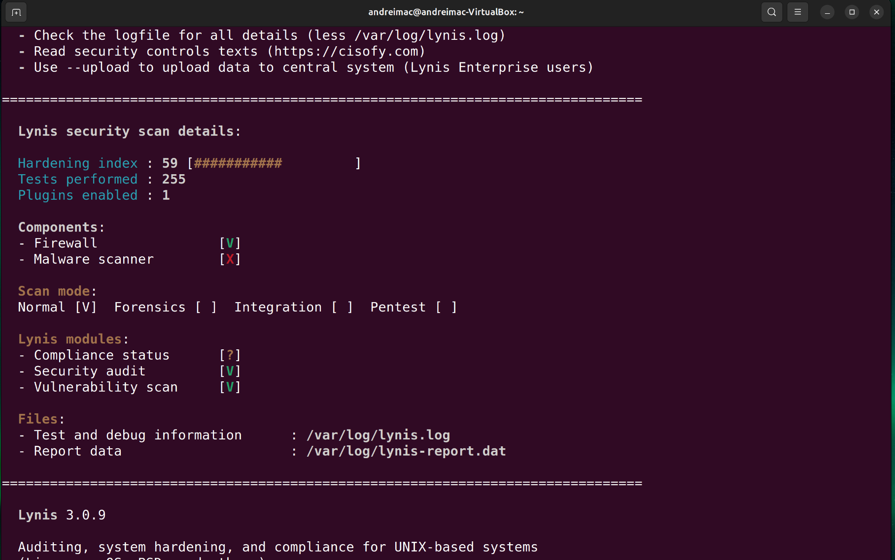
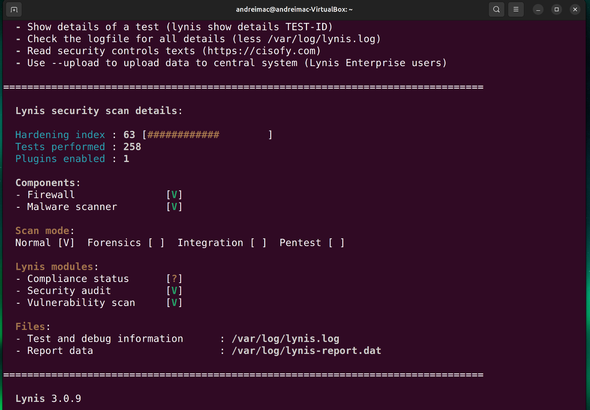
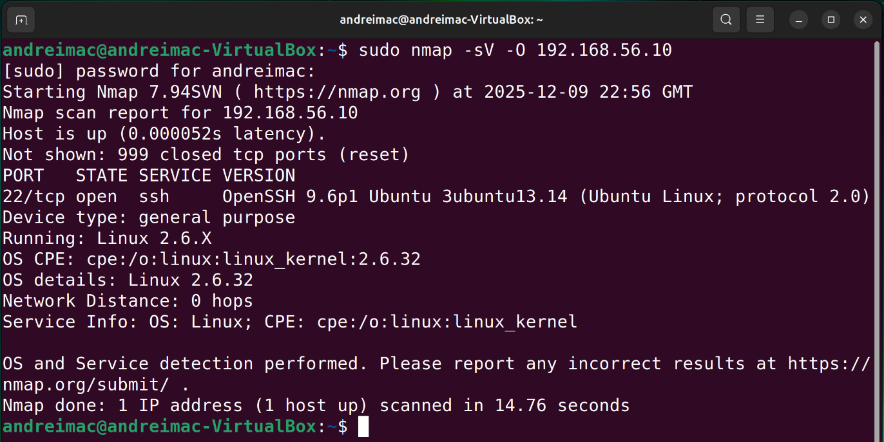
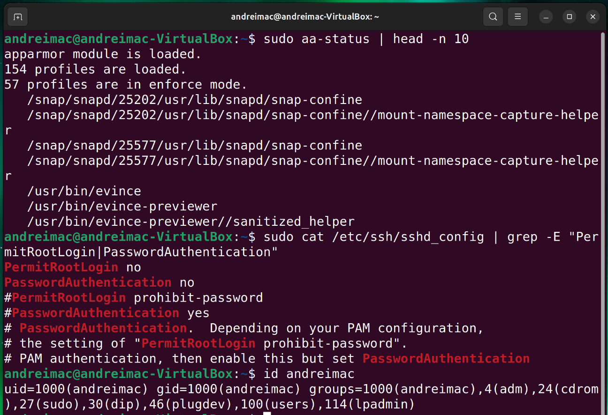
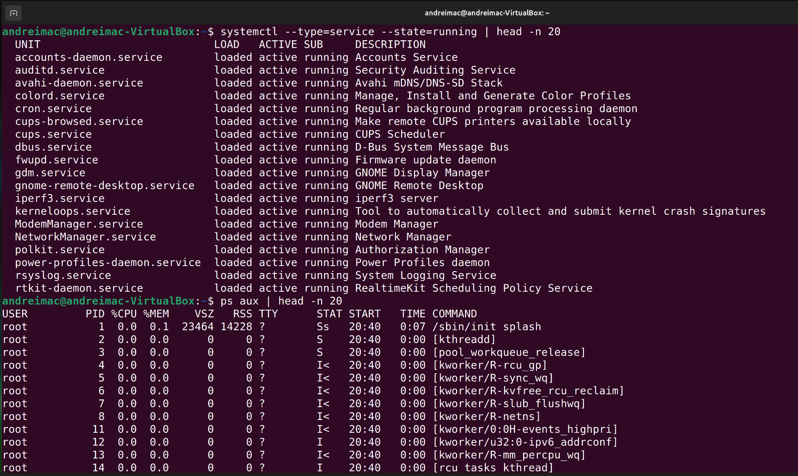
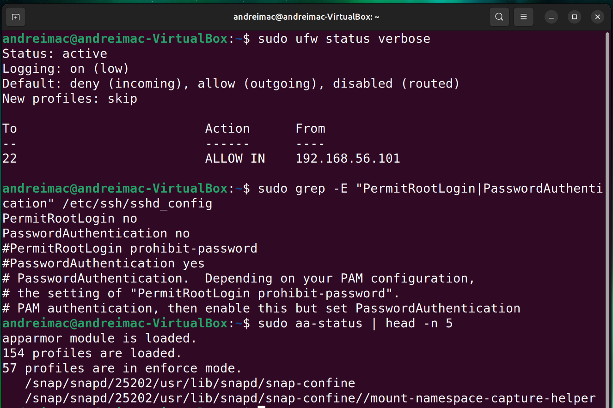
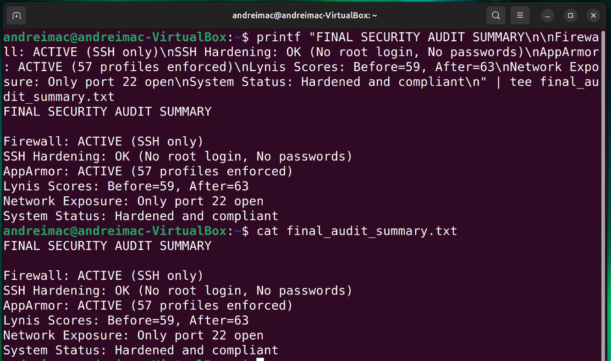

Final security assessment of the Ubuntu Server, including Lynis auditing, network scanning, service verification, access control analysis, and overall system evaluation.
This phase conducts a security audit of the deployed Ubuntu Server and evaluates the overall configuration, using command-line tooling only and remote administration via SSH.


nmap

nmap scan from the workstation showing only SSH (port 22) open.Command Used: sudo nmap -sV -O 192.168.56.10

Commands Used: sudo aa-status | head -n 10 sudo cat /etc/ssh/sshd_config | grep -E "PermitRootLogin|PasswordAuthentication" id andreimac

systemctl and ps used for the service inventory.Commands Used: systemctl --type=service --state=running | head -n 20 ps aux | head -n 20

Commands Used: sudo ufw status verbose sudo grep -E "PermitRootLogin|PasswordAuthentication" /etc/ssh/sshd_config sudo aa-status | head -n 5

Commands Used: printf "FINAL SECURITY AUDIT SUMMARY\n\nFirewall: ACTIVE (SSH only)\nSSH Hardening: OK (No root login, No passwords)\nAppArmor: ACTIVE (57 profiles enforced)\nLynis Scores: Before=59, After=63\nNetwork Exposure: Only port 22 open\nSystem Status: Hardened and compliant\n" | tee final_audit_summary.txt cat final_audit_summary.txt
Week 7 concludes the operating systems project with a full security audit of the deployed Ubuntu Server. Following the assessment brief’s Phase 7 requirements, I performed a comprehensive evaluation using Lynis, nmap, access control validation, service review, and configuration checks. All tasks were executed remotely via SSH, maintaining the command-line–only administration constraint.
Lynis was used to perform a deep security scan of the server. This helped identify misconfigurations, opportunities for strengthening the system, and produced a security score.
sudo lynis audit system
Before Remediation Score: Hardening index 59.
After Remediation Score: Hardening index 63.
An external security scan was performed from the workstation using nmap to
verify the firewall and ensure only SSH was reachable.
sudo nmap -sV -O 192.168.56.10
nmap scan confirming that port 22/SSH is the only exposed service.The scan confirmed that port 22 was the only open port, aligning with the firewall rules set in Weeks 4 and 5.
I reviewed AppArmor status, SSH daemon configuration, and privilege assignments to ensure that the principle of least privilege was respected.
sudo aa-status | head -n 10 sudo cat /etc/ssh/sshd_config | grep -E "PermitRootLogin|PasswordAuthentication" id adminuser
Using systemctl --type=service --state=running and
ps aux, I compiled a list of all active services and evaluated whether they were
required for the system’s intended function.
Unnecessary or unused services were disabled to reduce the attack surface.
The combined security controls from Weeks 4–7 create a robust environment aligned with the coursework learning outcomes. The final audit confirms that:
Residual risk mainly relates to the limits of a single-host setup (no redundancy) and dependencies on VirtualBox networking. These are noted in the written report as design rather than configuration risks.